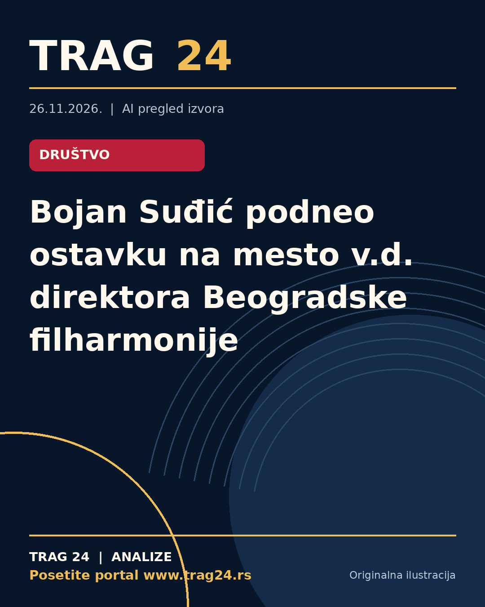

Bojan Suđić podneo ostavku na mesto v.d. direktora Beogradske filharmonije

ŠTA SE DOGODILO
Dirigent Bojan Suđić podneo je ostavku na mesto vršioca dužnosti direktora Beogradske filharmonije, nakon nešto više od deset meseci na toj funkciji. Njegov odlazak usledio je posle javnog zahteva Sindikata muzičkih umetnika Filharmonije za njegovu ostavku i povlačenje celokupnog Upravnog odbora.
HRONOLOGIJA
Suđić je na tu poziciju postavljen u januaru 2026. godine. Odmah nakon imenovanja, velika većina zaposlenih u Filharmoniji, njih 102 od 114, izrazila je protivljenje njegovom imenovanju i zatražila izbor nove uprave putem javnog konkursa. U novembru 2026. godine Sindikat muzičkih umetnika javno je zatražio njegovu ostavku zbog nezadovoljstva upravljanjem. Suđić je doneo odluku da podnese ostavku u novembru iste godine.
ŠTA NAVODE IZVORI
Iz Beogradske filharmonije su naveli da je Suđić bio kadrovsko rešenje koje je moralno neprihvatljivo, posebno zbog njegove istorije odnosa sa nekadašnjim zaposlenima. Takođe, branili su stav da je Suđić monopolizovao funkcije, istovremeno obavljajući više važnih uloga poput šefa dirigenta Simfonijskog orkestra RTS-a, direktora Muzičke produkcije RTS-a, profesora na Fakultetu muzičke umetnosti i selektora BEMUS-a. Sindikat i zaposleni ukazivali su na pritiske na zaposlene, ograničavanje profesionalne autonomije i odsustvo dugoročne strategije razvoja. Suđić je, sa svoje strane, naveo da je svoja napore usredotočio na unapređenje ustanove, da je bio izložen medijskim napadima i neistinitim tvrdnjama koje su onemogućile pravilnu evaluaciju njegovog rada. On je takođe izjavio da je njegov ostanak besmislen u uslovima u kojima pojedinci ostvaruju lične interese na štetu institucije.
ŠTA JE POTVRĐENO
Potvrđeno je da je Bojan Suđić podneo ostavku na mesto vršioca dužnosti direktora Beogradske filharmonije u novembru 2026. godine. Takođe je potvrđeno da je imao višestruke funkcije u muzičkim ustanovama i da je njegovo imenovanje izazvalo neslaganja među zaposlenima. Opozicija njegovom imenovanju uključivala je zaposlene i sindikat muzičkih umetnika. Suđić je istakao da je radio na dobrobiti ustanove i da će zaštititi svoj lični i profesionalni integritet pred nadležnim institucijama.
ŠTA NIJE POTVRĐENO
Nisu potvrđene konkretne informacije o daljim kadrovskim promenama unutar Beogradske filharmonije nakon Suđićeve ostavke. Takođe nije potvrđeno kako će se rešavati pomenuti nesporazumi unutar kolektiva i da li će biti raspisan javni konkurs za novog direktora.
ŠTA OSTАJE OTVORENO: Još nije poznato ko će naslediti Suđića na mestu v.d. direktora Beogradske filharmonije, niti kako će se rešavati dugoročne dileme zaposlenih o vođenju ustanove i njenom razvoju. Ostaje pitanje kako će se uspostaviti poverenje između zaposlenih i uprave u daljem periodu i da li će biti sprovedene promene koje bi adresirale ranije navode o pritiscima i monopolu funkcija.
Izvori
- https://www.danas.rs/kultura/bojan-sudjic-podneo-ostavku/
- https://www.espreso.co.rs/vesti/beograd/1631967/bojan-sudjic-podneo-ostavku
- https://vreme.com/kultura/bojan-sudjic-ostavka-beogradska-filharmonija/
Ova analiza je pripremljena uz pomoć veštačke inteligencije na osnovu javno dostupnih izvora. Navodi izvora nisu nužno nezavisno potvrđeni.